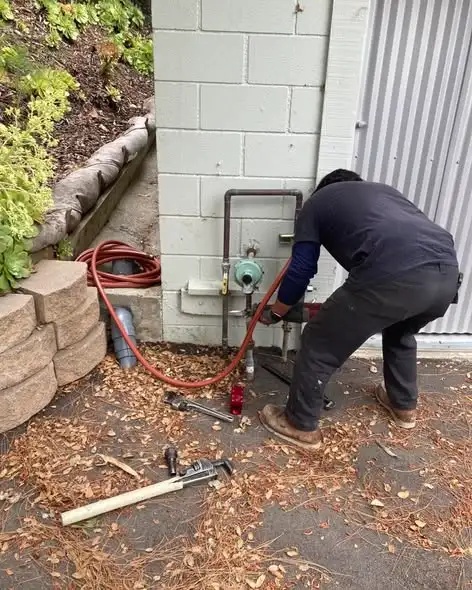
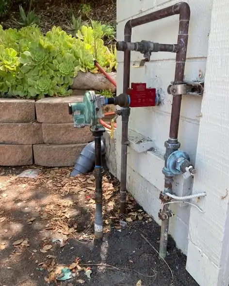
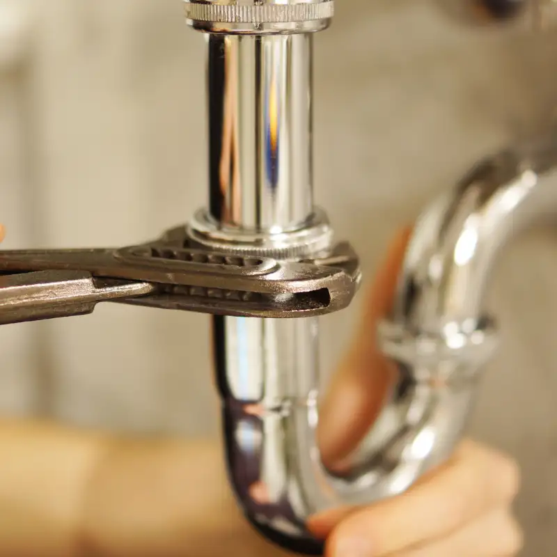

Leak Detection in Burien, WA
High water bill or a damp spot you cannot explain? Call (833) 710-2588 for leak detection in Burien. We find hidden leaks with less cutting, then fix them.

- Open 24/7Phone answered day and night
- Free quotePrice range on the call
- Firm priceIn writing before work starts
- 6 local areasBurien and nearby towns
The basics
What is professional leak detection service in Burien?
Leak detection is the process of finding water leaks you cannot see. Plumbers use acoustic listening tools, thermal cameras, moisture meters, and pressure tests to pinpoint leaks inside walls, under floors, and in buried water lines. Finding the exact spot means smaller openings and a cheaper repair.
Without leak detection, finding a hidden leak means guessing and opening walls. That is slow and expensive. With the right tools, a plumber can usually narrow the leak to a small area before cutting anything. Then the repair is quick and the patch is small.

What's included
What is included when you hire leak detection?
Leak detection includes checking your water meter, testing the system for pressure loss, and scanning the likely areas with detection tools. You get the location of the leak and a firm price to repair it. Many repairs can be done on the same visit.
- Water meter test to confirm a leak exists
- Pressure testing of the supply system
- Acoustic listening on pipes and slabs
- Thermal imaging of walls, ceilings, and floors
- Moisture readings in drywall and subfloor
- Yard service line leak location
- Toilet, fixture, and irrigation leak checks
- Repair quote for the leak we find
Pro tip
Read your water meter before bed and again in the morning with no water used. If the numbers changed, you have a leak somewhere.
Warning signs
What are the signs you need a leak detection plumber?
The most common sign is a water bill that jumps without any change in use. Others are a meter that moves with every tap off, damp or stained drywall, warped floors, musty smells, and the sound of running water when nothing is on. Mold in one spot often points to a leak behind it.
- Water bill much higher than the same month last year
- Meter dial moving when all water is off
- Stains or bubbling paint on walls or ceilings
- Soft, warped, or cupping floors
- Musty smell or mold in one area
- Sound of running water at night
- Wet soil or green patches in the yard in dry weather

Good to know
How can you check for a water leak before you call?
Turn off every faucet, appliance, and irrigation zone. Then look at your water meter. If the dial or low-flow indicator is still moving, you have a leak. Wait an hour and check again to catch slow leaks. Next, add food coloring to toilet tanks to check for silent toilet leaks.
- Turn off all water use in and out of the house.
- Find your meter, usually in a box near the street.
- Watch the small triangle or star dial for 10 minutes.
- Shut the main valve at the house. If the meter still moves, the leak is in the yard line.
- If it stops, the leak is inside the house.
If your meter shows a leak, call us. Tell us the result of the test. It helps us bring the right tools and give a better price range.
Warning
Do not ignore a small ceiling stain. Water travels along framing, so the leak may be bigger and farther away than the stain.
How it works
How does non-invasive leak detection work?
The plumber confirms the leak with a meter and pressure test, then splits the system into sections to narrow it down. Listening tools and thermal cameras pinpoint the spot. Once found, the plumber shows you the location and quotes the repair.
- Confirm. Meter and pressure tests prove there is a leak.
- Isolate. Shut valves to test hot, cold, and yard lines separately.
- Pinpoint. Acoustic and thermal tools find the exact spot.
- Repair. Open a small area and fix the pipe.
- Verify. Retest to make sure the system holds pressure.
Pricing
How much does leak detection cost in Burien?
Leak detection in Burien usually costs $200 to $600, depending on how hard the leak is to find. The repair is priced separately. A simple pipe repair runs about $200 to $800. A slab leak or long yard line repair can cost $1,500 to $5,000 or more.
| Job | Typical Burien-area cost |
|---|---|
| Leak detection visit | $200 – $600 |
| Accessible pipe leak repair | $200 – $800 |
| Leak repair behind drywall | $400 – $1,200 (plus wall patch) |
| Yard water service line repair | $800 – $3,000 |
| Water service line replacement | $2,500 – $6,000 |
| Slab leak reroute | $1,500 – $5,000 |
Repair vs replace
Should you repair the leak or replace the pipe?
Repair the leak if the pipe is in good shape and this is the first leak. Replace the pipe if you have had more than one leak, the pipe is galvanized, or the leak is in an old service line. Repeated pinhole leaks usually mean the whole line is wearing out.
| Situation | Best choice |
|---|---|
| First pinhole in copper | Repair the section |
| Second or third leak in a year | Plan a repipe |
| Leak in galvanized pipe | Replace that run |
| Leaking yard service line, old material | Replace the line |
In Burien, many houses built before 1970 still have galvanized or early copper lines. Leaks in those homes are often a sign that more are coming. See our pipe repair and repiping page for options.
Why act now
Why hire leak detection now instead of waiting?
Hidden leaks keep running all day and night. They raise your water bill, rot framing and subfloor, and grow mold. In Burien's damp climate, crawl spaces and walls do not dry out on their own. Finding the leak early keeps a small repair from becoming a big remodel.
Related services
FAQ
Frequently asked questions
Short, direct answers to the questions we hear most on the phone. Do not see yours? Call and ask.
Ask a Plumber NowHow do plumbers find leaks without opening walls?
They use acoustic tools that hear water escaping, thermal cameras that see cool wet spots, and moisture meters. These narrow the leak to a small area before any opening.
Will homeowners insurance pay for leak detection?
Some policies cover the cost to find and access a leak when it causes covered damage. Check with your insurer. We provide notes and photos to help.
Can a toilet leak raise my water bill?
Yes. A running or silent toilet leak can waste thousands of gallons a month. Put food coloring in the tank. If color shows in the bowl without flushing, the flapper is leaking.
Who fixes the leak between the meter and my house?
In most cases the homeowner owns the line from the meter to the house. Your water district usually owns the meter and the line on the street side.
How long does leak detection take?
Most leak detection visits take 1 to 3 hours. Simple leaks can be found in under an hour. Slab and yard leaks can take longer.
Is a slab leak common in Burien?
Slab leaks are less common here because many Burien homes have crawl spaces or basements. They do happen in homes built on slabs, and the signs are warm spots on the floor and constant meter movement.
Call now
Ready to get your plumbing fixed?
A person answers 24/7, gives you a price range, and books the next open time.
(833) 710-2588